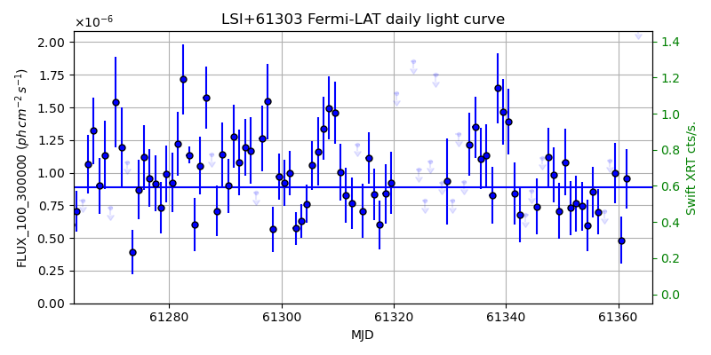
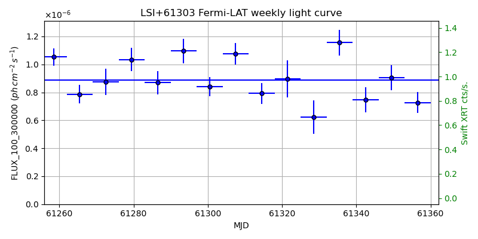
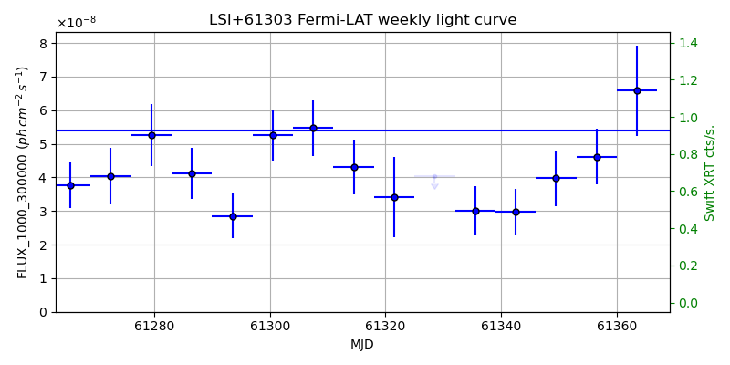

LAT Lightcurve site: https://fermi.gsfc.nasa.gov/ssc/data/access/lat/msl_lc/source/LSI_p61_303
Swift site: https://www.swift.psu.edu/monitoring/source.php?source=LSI+61303
NED: Query
Time of last update of this page: UT: 2026-11-28 16:13 (MJD: 61372.676)
| Property | Value |
|---|---|
| R.A. | 2:40:31.44 |
| Dec. | 61:13:44.4 |
| z | 0.000 |
| 3FGL SpectrumType | LogParabola |
| 3FGL PL Index | |
| 3FGL Flux_100_300000 | 8.90e-07 1 / (s cm2) |
| 3FGL Flux_1000_300000 | 5.39e-08 1 / (s cm2) |
| 3FGL Flux >200 GeV | 7.50e-12 1 / (s cm2) |
| 3FGL Extrap. Crab >200 GeV | 0.03 |
| 3FGL Flux After EBL Absorption >200GeV | 7.50e-12 1 / (s cm2) |
| 3FGL EBL Crab Fraction >200GeV | 0.03 |

| MJD | dMJD | Flux | dFlux | Frac3FGL | FracCrab>200GeV | EBLFracCrab>200GeV |
|---|---|---|---|---|---|---|
| 61367.50 | 0.50 | 1.35e-06 | 3.88e-07 | 1.52 | 0.05 | 0.05 |
| 61368.50 | 0.50 | 1.54e-06 | 3.88e-07 | 1.73 | 0.05 | 0.05 |
| 61369.50 | 0.50 | 1.42e-06 | 0.00e+00 | 0.00 | 0.00 | 0.00 |
| 61370.50 | 0.50 | 1.07e-06 | 0.00e+00 | 0.00 | 0.00 | 0.00 |
| 61371.50 | 0.50 | 1.55e-06 | 0.00e+00 | 0.00 | 0.00 | 0.00 |

| MJD | dMJD | Flux | dFlux | Frac3FGL | FracCrab>200GeV | EBLFracCrab>200GeV |
|---|---|---|---|---|---|---|
| 61335.50 | 3.50 | 1.16e-06 | 9.18e-08 | 1.30 | 0.04 | 0.04 |
| 61342.50 | 3.50 | 7.46e-07 | 9.06e-08 | 0.84 | 0.03 | 0.03 |
| 61349.50 | 3.50 | 9.05e-07 | 8.83e-08 | 1.02 | 0.03 | 0.03 |
| 61356.50 | 3.50 | 7.27e-07 | 7.53e-08 | 0.82 | 0.03 | 0.03 |
| 61363.50 | 3.50 | 9.60e-07 | 1.24e-07 | 1.08 | 0.03 | 0.03 |
| MJD | dMJD | Flux | dFlux | Frac3FGL | FracCrab>200GeV | EBLFracCrab>200GeV |
|---|---|---|---|---|---|---|
| 61367.50 | 0.50 | 9.71e-08 | 0.00e+00 | 0.00 | 0.00 | 0.00 |
| 61368.50 | 0.50 | 1.18e-07 | 0.00e+00 | 0.00 | 0.00 | 0.00 |
| 61369.50 | 0.50 | 7.18e-08 | 0.00e+00 | 0.00 | 0.00 | 0.00 |
| 61370.50 | 0.50 | 7.66e-08 | 0.00e+00 | 0.00 | 0.00 | 0.00 |
| 61371.50 | 0.50 | 7.93e-08 | 0.00e+00 | 0.00 | 0.00 | 0.00 |

| MJD | dMJD | Flux | dFlux | Frac3FGL | FracCrab>200GeV | EBLFracCrab>200GeV |
|---|---|---|---|---|---|---|
| 61335.50 | 3.50 | 3.01e-08 | 7.26e-09 | 0.56 | 0.02 | 0.02 |
| 61342.50 | 3.50 | 2.97e-08 | 7.04e-09 | 0.55 | 0.02 | 0.02 |
| 61349.50 | 3.50 | 3.97e-08 | 8.30e-09 | 0.74 | 0.02 | 0.02 |
| 61356.50 | 3.50 | 4.62e-08 | 8.35e-09 | 0.86 | 0.03 | 0.03 |
| 61363.50 | 3.50 | 6.59e-08 | 1.34e-08 | 1.22 | 0.04 | 0.04 |
--------------------------------------------------------- Using user-supplied coords: 2:40:31.44 61:13:44.4 2000 --------------------------------------------------------- FLWO UT night of: 2026-11-29 Local Sid. @ Midnight: 04:08 Sunset (-15.0) (local, UT): 18:31 01:31 Sunrise (-15.0) (local, UT): 05:53 12:53 Moonrise (local, UT): 21:57 04:57 Moonset (local, UT): Moon phase: 0.72 --------------------------------------------------------- AzTime LSID UT Obj_el Obj_az Mn_el Mn_az Sep. --------------------------------------------------------- 18:31 22:39 01:31 41.3 33.9 -32.9 32.1 74.2 19:01 23:09 02:01 44.8 32.8 -29.4 38.9 74.4 19:31 23:39 02:31 48.2 31.0 -25.4 45.0 74.7 20:01 00:09 03:01 51.4 28.4 -21.0 50.6 74.9 20:31 00:39 03:31 54.3 24.8 -16.2 55.6 75.2 21:01 01:09 04:01 56.7 20.2 -11.1 60.2 75.4 21:31 01:39 04:31 58.6 14.4 -5.4 64.5 75.6 22:01 02:09 05:01 59.9 7.8 0.4 68.5 75.8 22:31 02:39 05:31 60.3 0.7 5.8 72.2 76.1 23:01 03:10 06:01 60.0 353.4 11.6 75.8 76.3 23:31 03:40 06:31 58.9 346.7 17.5 79.4 76.5 00:01 04:10 07:01 57.1 340.8 23.6 82.9 76.6 00:31 04:40 07:31 54.7 335.9 29.7 86.5 76.8 01:01 05:10 08:01 51.9 332.2 35.8 90.3 77.0 01:31 05:40 08:31 48.8 329.4 42.0 94.4 77.2 02:01 06:10 09:01 45.4 327.4 48.1 99.1 77.4 02:31 06:40 09:31 41.9 326.3 54.2 104.7 77.5 03:01 07:10 10:01 38.3 325.8 60.1 111.7 77.7 03:31 07:40 10:31 34.7 325.8 65.6 121.1 77.9 04:01 08:10 11:01 31.2 326.3 70.5 134.7 78.1 04:31 08:40 11:31 27.7 327.2 74.0 154.7 78.2 05:01 09:11 12:01 24.3 328.5 75.2 181.1 78.4 05:31 09:41 12:31 21.0 330.2 73.6 206.8 78.6 05:53 10:02 12:53 18.8 331.6 71.0 221.2 78.7 --------------------------------------------------------- Dark hours >55 deg.: 1.29 srcstart (UT): 2026-11-29 03:39 srcend (UT): 2026-11-29 04:57